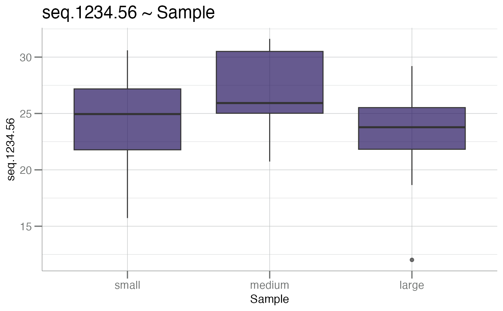
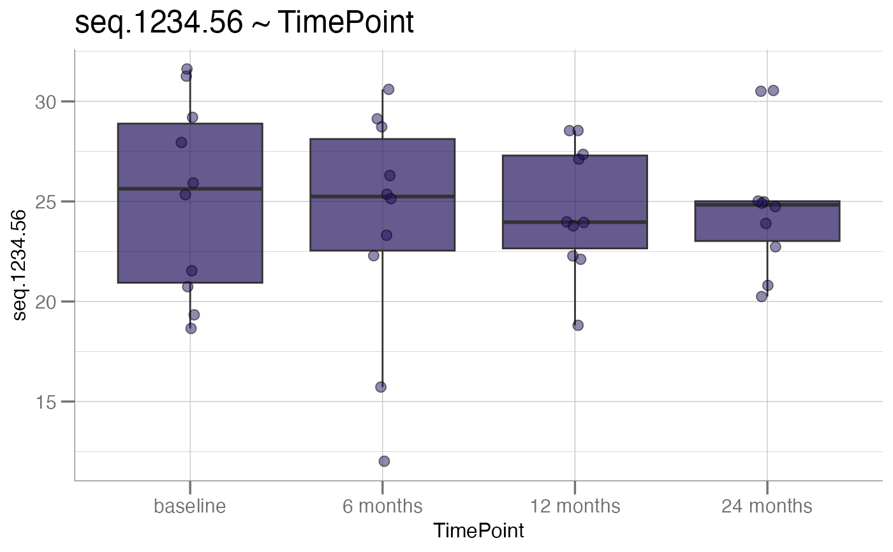
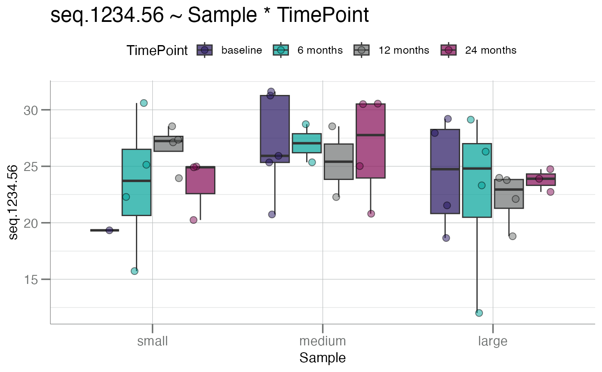
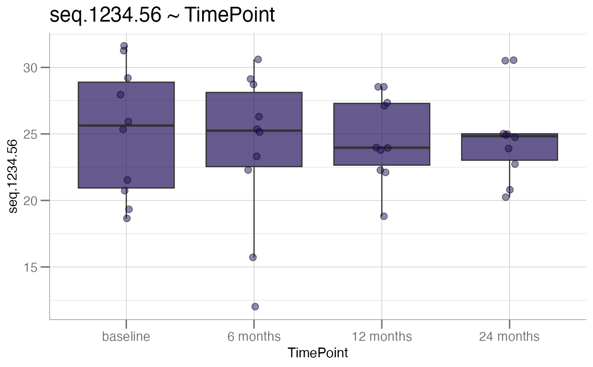
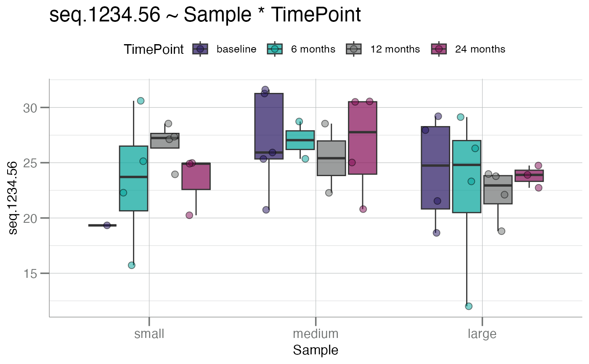

Generate boxplots of a response variable by one or two factor variables.
Usage
boxplotGrouped(
.data,
y,
group.var,
notch = FALSE,
y.lab = NULL,
x.lab = NULL,
beeswarm = FALSE,
main = NULL,
pt.shape = 21,
pt.size = 2.5
)Arguments
- .data
Either a
data.frame/tbl_dfobject where each column is a numeric vector containing values for each box, or a namedlistobject which can be converted to one.- y
Character. The response variable for the
yaxis.- group.var
Character. String of length 1 or 2 representing the names of the grouping variable(s). Variables must be either factor or character class vectors.
- notch
Logical. Should notches be drawn in the boxplots? If FALSE (default), a standard box plot will be drawn. If TRUE, notches will be added to the median line of each box plot. See
notchargument ofgeom_boxplot().- y.lab
Character. Optional string for the y-axis. Otherwise one is automatically generated (default).
- x.lab
Character. Optional string for the x-axis. Otherwise one is automatically generated (default).
- beeswarm
Logical. Add points as overlay on top of boxplots?
- main
Character. Main title for the plot. See
ggtitle()forggplot2style graphics.- pt.shape
Numeric or Character. Recognized
pchshapes for the points. Recall that onlypch = 21 - 25are "fill-able". Other point characters will not take on the color frompt.color. Seegeom_point().- pt.size
Numeric. A size for the points. See
geom_point().
See also
geom_boxplot(), geom_jitter()
Other boxplots:
boxplotBeeswarm(),
boxplotSubarray()
Examples
size <- c("small", "medium", "large")
time <- c("baseline", "6 months", "12 months", "24 months")
df <- data.frame(
Sample = sample(size, 40, replace = TRUE),
TimePoint = rep(time, each = 10),
seq.1234.56 = stats::rnorm(40, mean = 25, sd = 3.5)
)
# factor levels determine group order
df$Sample <- factor(df$Sample, levels = size)
df$TimePoint <- factor(df$TimePoint, levels = time)
# single factor
boxplotGrouped(df, y = "seq.1234.56", group.var = "Sample")

# double factor
boxplotGrouped(df, y = "seq.1234.56", group.var = c("Sample", "TimePoint"))
 # with "beeswarm" points
boxplotGrouped(df, y = "seq.1234.56", group.var = "TimePoint", beeswarm = TRUE)

boxplotGrouped(df, y = "seq.1234.56", group.var = c("Sample", "TimePoint"),
beeswarm = TRUE)

# with "beeswarm" points
boxplotGrouped(df, y = "seq.1234.56", group.var = "TimePoint", beeswarm = TRUE)

boxplotGrouped(df, y = "seq.1234.56", group.var = c("Sample", "TimePoint"),
beeswarm = TRUE)
